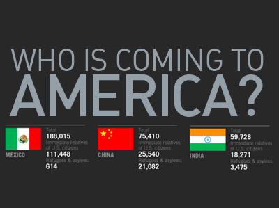

Tue, 31 Aug 2010 18:07:00 · america · china · mexico · india · infographic
Infographic: Who's Coming to America?
A general overview at the top 20 countries from which most people came to America illegally. The statistic itself may be outdated, but hopefully still very relevant. The data source is pulled from the US Department of Homeland Security, in case you have any doubt for its accuracy. :-)

For more augmented view, go visit SimpleComplexity here.